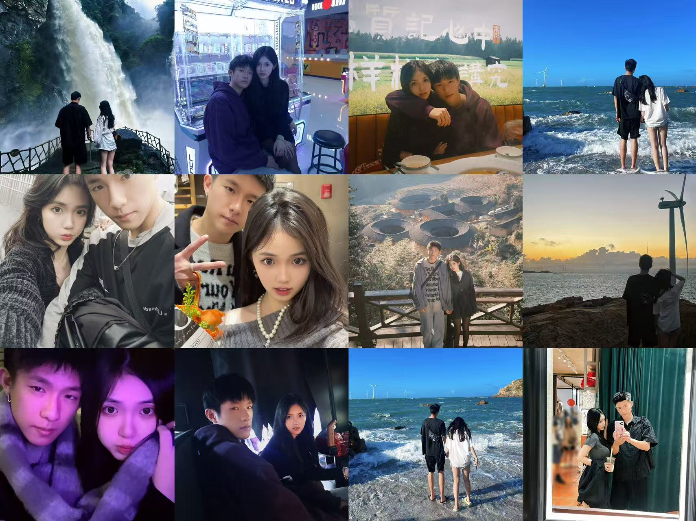
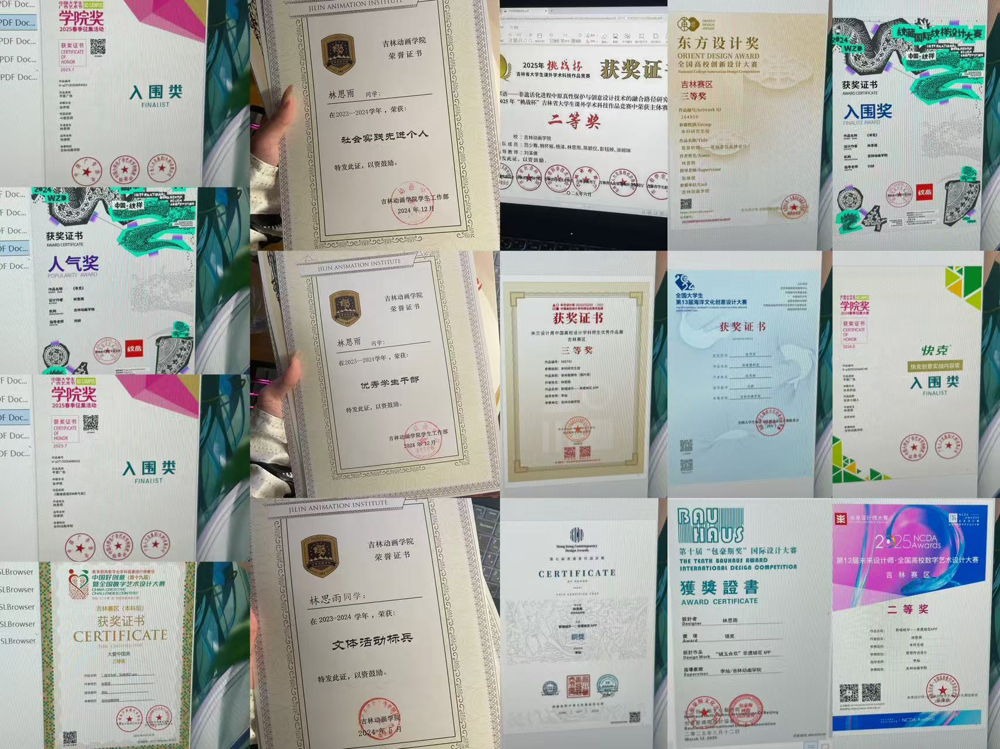
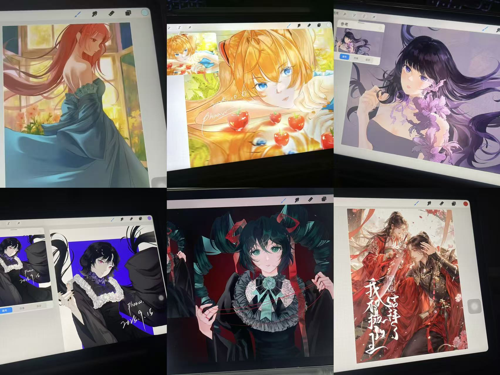

Welcome to Lord Siyu's world
幸福的每一天，降临在我身边。
我的好朋友有着彩虹一样的颜色，有着烘焙店里弥漫的面包香气，有着比热水袋还要温暖的拥抱，有着比羽毛枕头还柔软的心，有着从黑暗里拯救我的超能力，有着对我一百万吨的真诚心意。



There is such a sentence in the Green Book.
《绿皮书》:"这世界上有各种各样的人，恰巧我们成为了朋友，这不是缘分，是因为我们本就应该是朋友。我一直都很庆幸认识身边的那些好友，在朋友这件事上我从不羡任何人，因为我的朋友足够棒，讲真的，你们在我身边我玩闹都有安全感。好的友谊一定是轻松的，可以无顾忌地分享快乐，也不避讳展露痛楚，彼此尊重，以及发自内心的相互欣赏，遇到这样的朋友真超级幸运。各有各的朋友，很庆幸能够成为你的朋友，没什么好炫耀的，世中逢尔，你胜过千万泛泛之交。”